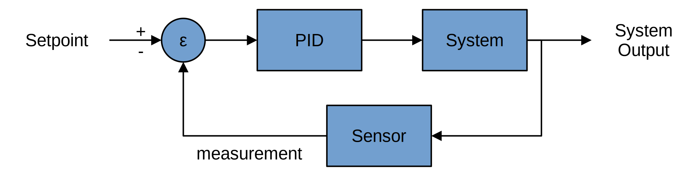

PID controller
| mode | |
|---|---|
| heater mode | |
| target temperature | |
| cooling factor | |
| max heating speed | |
| sensor delay in frames (60 fps) | |
| K_p | |
| K_i | |
| K_d | |
| tau | |
| pause |
About
This example emulates a running shower fed by a water tank.
When hot water is extarcted from the tank to the shower, new cold water is injected into the tank, thus making the tank water temperature drop.
The water tank is provided with a sensor measuring the water temperature and a heater able to heat the water.
However, the sensor comes with a small delay, wich can be tuned in the settings.
To understand the need for a PID controller, we can first try a more basic approach, using the "basic" mode.
In this mode, if the sensed temperature is below the target, the heater starts, else the heater shuts off.
By using this mode, we see that the sensor realizes too late that the temperature is below target, and realized to late that the temperature is above target.
Thus we obtain an unconfortable oscillation of the temperature around the target which would not provide a great shower experience.
However, we see that when we switch to the PID mode, that oscillation disapears quickly and the temperature stabilizes around the target much better,
that is if and only if the PID parameters (Kp, Ki, Kd, Tau) are well calibrated off course.
To understand why the PID controller works so much better than the basic mode, we can see it as follows :
In the basic mode, only the current state of the sensor is taken into account.
Whereas in the PID mode, the current state of the sensor is taken into account through the proportional term (Kp),
but also the past states off the sensor are accounted for through the integral term (Ki),
aswell as the predicted futur state of the sensor through the derivative term (Kd).
Altogether, this makes for a much better controller.
inspired by the following video
PID block diagram
PID

PID Block Diagram, Arturo Urquizo, CC BY-SA 3.0 via Wikimedia Commons
PID in continuous domain
unfiltered derivative
filtered derivative
PID in discrete domain
use of Tustin transform to convert from continous domain (s-domain) to discrete domain (z-domain)
and
thus we get